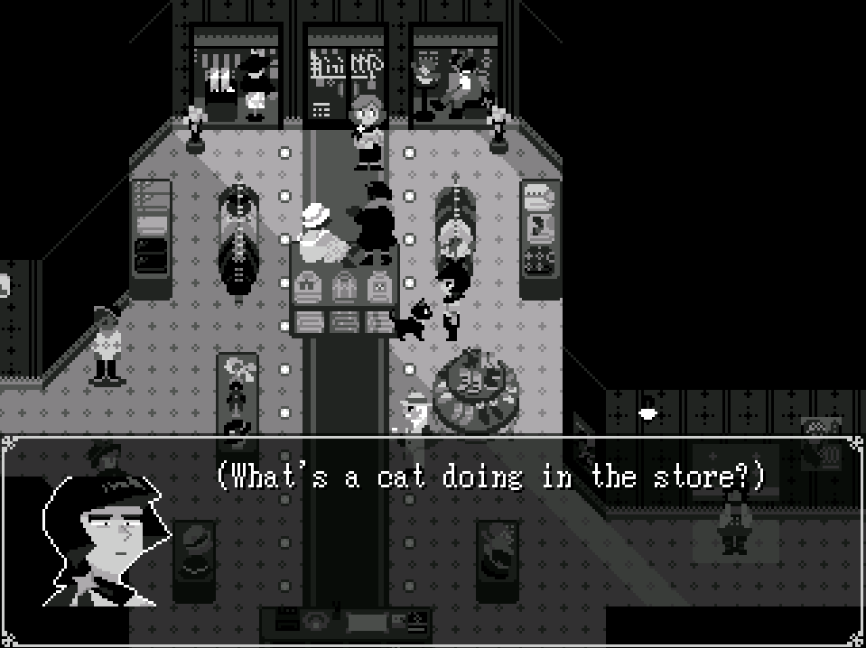

yahoo! you just activated AUTHOR COMMENTS. this page is for pixel art! i'm especially fond of making limited color palettes and making little guys walk around. just a heads up: there are some moving images on this page.
yahoo! you just activated AUTHOR COMMENTS. this page is for pixel art! i'm especially fond of making limited color palettes and making little guys walk around. just a heads up: there are some moving images on this page.
✦ PIXEL ✦
see also... main gallery
▲ this is from bad manor, my most recent rpgmaker2003 endeavor about 4 hired servants house-sitting a cursed manor... i wanted to go for a more gothic, mysterious feeling this time around.


 ▲ 3AM apocalypse is a story about three LGBTQ kids at a sleepover making up stories of the apocalypse when they can't fall back asleep! the setting of the apocalypse world is meant to evolve the more they talk into the night. i'm still fond of the color palette and face sprites i did for this game :')
▲ 3AM apocalypse is a story about three LGBTQ kids at a sleepover making up stories of the apocalypse when they can't fall back asleep! the setting of the apocalypse world is meant to evolve the more they talk into the night. i'm still fond of the color palette and face sprites i did for this game :')

 ▲ once upon a time, before edamame days was a comic about beans and being trans, it was a game about beans and being trans. if you'd like to see some old visual stuff for this game, check out this page from my old site! i ended up switching to a comic format and changing the setting because the school/home setting was hitting too close to home and bummed me out. _ :(´ཀ`」 ∠):_
▲ once upon a time, before edamame days was a comic about beans and being trans, it was a game about beans and being trans. if you'd like to see some old visual stuff for this game, check out this page from my old site! i ended up switching to a comic format and changing the setting because the school/home setting was hitting too close to home and bummed me out. _ :(´ཀ`」 ∠):_

▲ these are from moonlit lobby, a game i made for the Dream Diary Jam to celebrate Yume Nikki! it's a world of talking cats set in old timey black and white with some vague 1920s and film noir aesthetics. even though it was done in a nightmarish flurry in one month, i'm still proud of my work in this game! you can play moonlit lobby (demo) here.